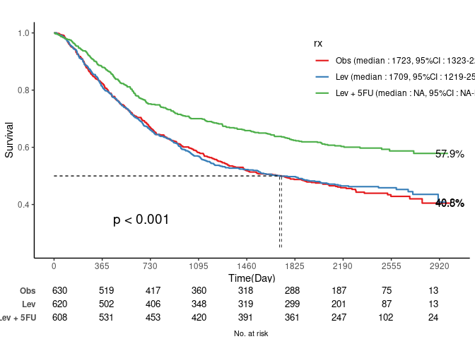
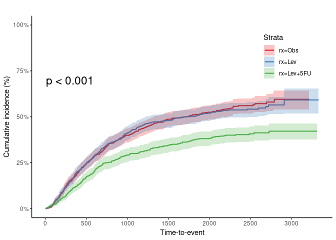
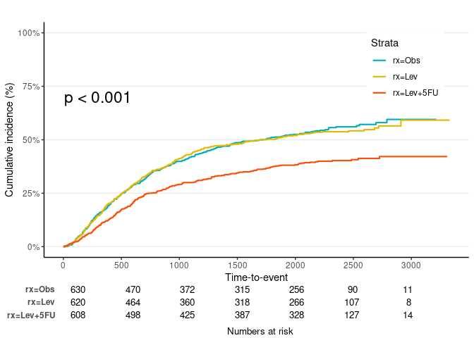

Kaplan-Meier Plot with ‘ggplot2’: ‘survfit’ and ‘svykm’ objects from ‘survival’ and ‘survey’ packages.


Install
install.packages("jskm")
## From github: latest version
install.packages("remotes")
remotes::install_github("jinseob2kim/jskm")
library(jskm)Example
Survival probability
#Load dataset
library(survival)
data(colon)
fit <- survfit(Surv(time,status)~rx, data=colon)
#Plot the data
jskm(fit)
jskm(fit, table = T, pval = T, label.nrisk = "No. at risk", size.label.nrisk = 8,
xlabs = "Time(Day)", ylabs = "Survival", ystratalabs = c("Obs", "Lev", "Lev + 5FU"), ystrataname = "rx",
marks = F, timeby = 365, xlims = c(0, 3000), ylims = c(0.25, 1), showpercent = T)
Cumulative hazard: 1- Survival probability
jskm(fit, ci = T, cumhaz = T, mark = F, ylab = "Cumulative incidence (%)", surv.scale = "percent", pval =T, pval.size = 6, pval.coord = c(300, 0.7))
Landmark analysis
jskm(fit, mark = F, surv.scale = "percent", pval =T, table = T, cut.landmark = 500)
jskm(fit, mark = F, surv.scale = "percent", pval =T, table = T, cut.landmark = 500, showpercent = T)
Weighted Kaplan-Meier plot - svykm.object in survey package
library(survey)
data(pbc, package="survival")
pbc$randomized <- with(pbc, !is.na(trt) & trt>0)
biasmodel <- glm(randomized~age*edema,data=pbc)
pbc$randprob <- fitted(biasmodel)
dpbc<-svydesign(id=~1, prob=~randprob, strata=~edema, data=subset(pbc,randomized))
s1 <-svykm(Surv(time,status>0) ~ 1, design = dpbc)
s2 <-svykm(Surv(time,status>0) ~ sex, design = dpbc)
svyjskm(s1)
svyjskm(s2, pval = T, table = T, design = dpbc)svyjskm(s2, cumhaz = T, ylab = "Cumulative incidence (%)", surv.scale = "percent", pval = T, design = dpbc, pval.coord = c(300, 0.7), showpercent = T) 
If you want to get confidence interval, you should apply se = T option to svykm object.

svyjskm(s3, ci = F)
svyjskm(s3, ci = F, surv.scale = "percent", pval =T, table = T, cut.landmark = 1000, showpercent = T)